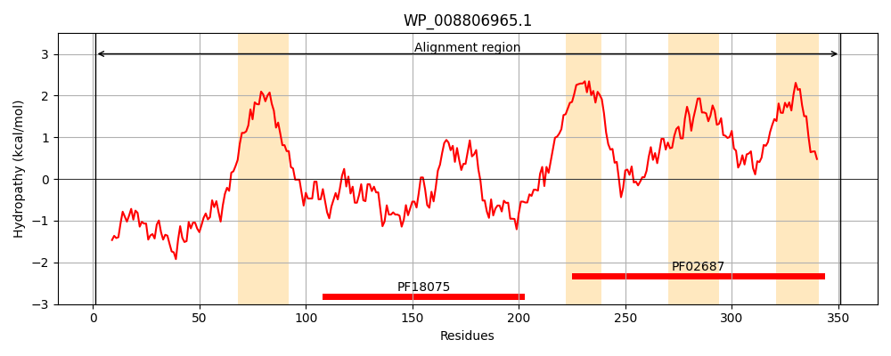
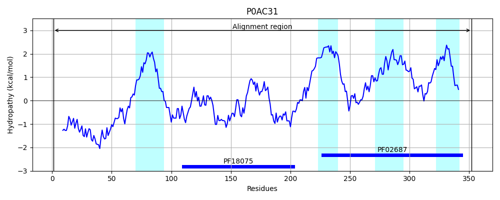
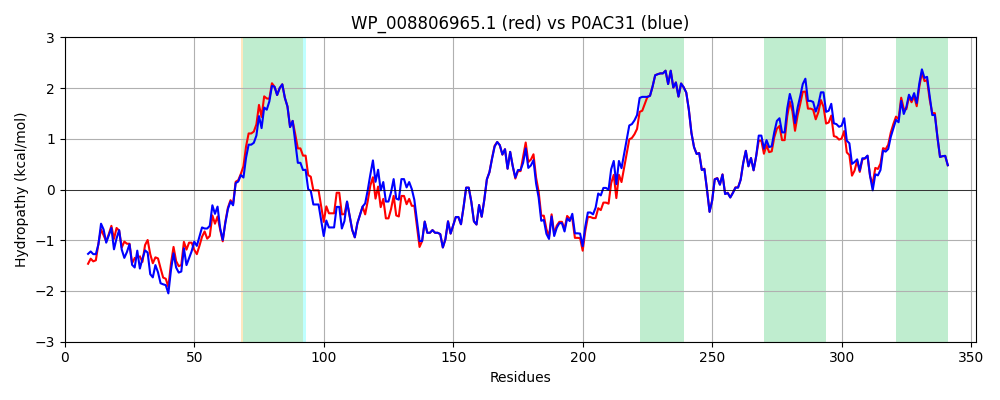

Hit Accession: P0AC31
Hit TCID: 3.A.1.140.1
Hit Description: gnl|BL_ORD_ID|8731 gnl|TC-DB|P0AC31|3.A.1.140.1 Cell division protein ftsX OS=Escherichia coli O6 GN=ftsX PE=3 SV=1
Mach Len: 352
e:0.000000
Query TMS Count : 4
Hit TMS Count: 4
TMS-Overlap Score: 4.200000
Predicted Substrates:None
BLAST Alignment:
Score: 1551 , Bit scores: 602 bits, E-value: 0.0e+00, Alignment length: 352, Percentage identity: 84
Query: 1 MNKRDAMNQIRQFGSKFDRLRNAAGGSG-GGRNAPKRPKAAPNPASRKSNVFNEQVRYAWHGALQDLKSTPLATFLTVMVIAISLTLPSVCYMVYKNVSSAASQYYPSPQITVYLEKTLDDDAAARVVGQLQAEQGVDKVNYLSRDEALGEFRNWSGFGGALDMLEENPLPAVAIVVPKLDFQSTEALNTLRERVSRIQGVDEVRMDDSWFARLSSLTGLVGRVSAMIGVLMVAAVFLVIGNSVRLSIFARRDTINVQKLIGATDGFILRPFLYGGAMLGFSGAFLSLILSEILVMRLSSAVTEVAKVFGTQFELSGLGFDECLLMLIVCSMIGWVAAWLATVQHLRHFTPD 351
MNKRDA+N IRQFG + DR R + GGSG GGRNAPKR K++P P +RK+NVFNEQVRYA+HGALQDLKS P ATFLTVMVIAISLTLPSVCYMVYKNV+ AA+QYYPSPQITVYL+KTLDDDAAA VV QLQAEQGV+KVNYLSR++ALGEFRNWSGFGGALDMLEENPLPAVA+V+PKLDFQ TE+LNTLR+R+++I G+DEVRMDDSWFARL++LTGLVGRVSAMIGVLMVAAVFLVIGNSVRLSIFARRD+INVQKLIGATDGFILRPFLYGGA+LGFSGA LSLILSEILV+RLSSAV EVA+VFGT+F+++GL FDECLL+L+VCSMIGWVAAWLATVQHLRHFTP+
Sbjct: 1 MNKRDAINHIRQFGGRLDRFRKSVGGSGDGGRNAPKRAKSSPKPVNRKTNVFNEQVRYAFHGALQDLKSKPFATFLTVMVIAISLTLPSVCYMVYKNVNQAATQYYPSPQITVYLQKTLDDDAAAGVVAQLQAEQGVEKVNYLSREDALGEFRNWSGFGGALDMLEENPLPAVAVVIPKLDFQGTESLNTLRDRITQINGIDEVRMDDSWFARLAALTGLVGRVSAMIGVLMVAAVFLVIGNSVRLSIFARRDSINVQKLIGATDGFILRPFLYGGALLGFSGALLSLILSEILVLRLSSAVAEVAQVFGTKFDINGLSFDECLLLLLVCSMIGWVAAWLATVQHLRHFTPE 352 | Protein Hydropathy Plots: |
|---|
|  |  |
Pairwise Alignment-Hydropathy Plot:
|
|---|
|  |